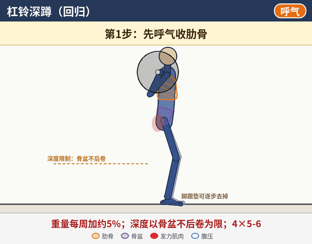
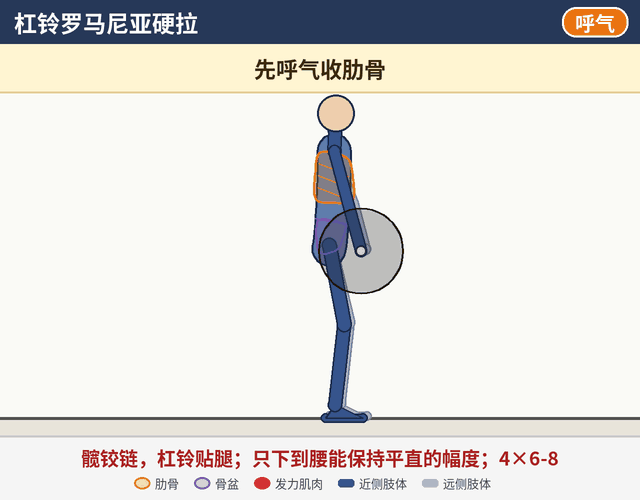
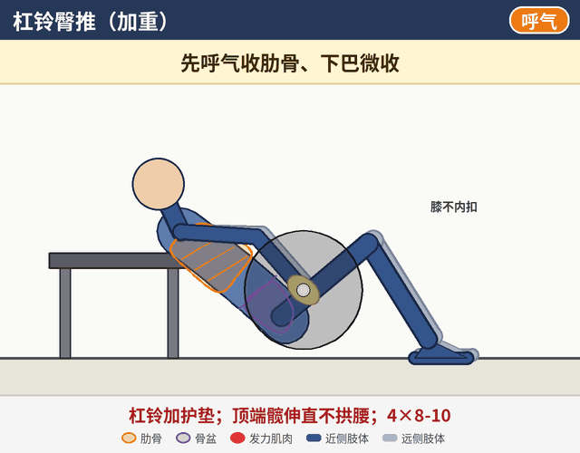
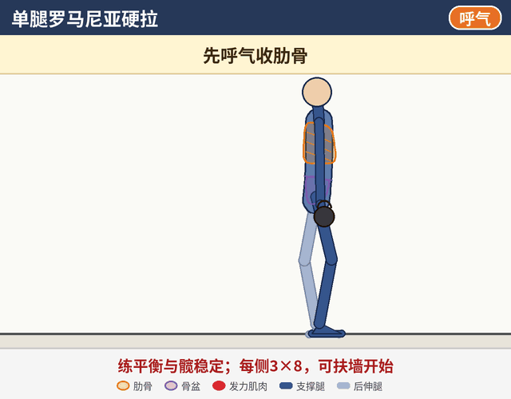
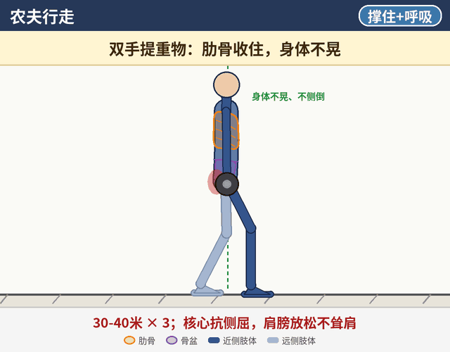

第三阶段：目标与安排
每周安排建议
- 每周3-4次，例如：A天深蹲为主 / B天硬拉为主 / 上肢日。
- 示例A天：杠铃深蹲、杠铃臀推、平板支撑或侧平板。
- 示例B天：六角杠硬拉（或杠铃罗马尼亚硬拉）、单腿罗马尼亚硬拉、农夫行走。
- 示例上肢日：卧推等上肢训练（注意事项同第一阶段），加Pallof推。
- 热身仍做第一阶段的90/90呼吸、死虫、臀桥。
每个动作都先做好呼吸设置：先呼气收肋骨，再吸气往腰两侧和后背撑住。
怎么看动画：深色是靠近你一侧的手脚，浅色是另一侧；橙色轮廓是肋骨，紫色是骨盆，红色是正在发力的肌肉，蓝色圈是腹压。右上角标签提示吸气 / 呼气。动画只是示意，实际节奏以文字里的秒数为准。
建议顺序：按页面顺序练，先呼吸和激活，再做力量动作。
建议顺序：按页面顺序练，先呼吸和激活，再做力量动作。
1
杠铃深蹲（回归）
逐步恢复大重量

组数次数4×5-6；重量每周增加约5%
姿势
杠铃放在上背，握距舒适；脚跟垫可以逐步去掉。
动作
- 第1步：先呼气收肋骨。
- 第2步：吸气往腰两侧和后背撑住，然后屏气。
- 第3步：下蹲，到骨盆后卷之前就停。
- 第4步：脚踩地站起，过了最难点再呼气。
关键点
- 每一次下蹲前都重新呼气收肋骨，再屏气撑住。
- 深度以骨盆不后卷为限。
常见错误
- 站着时肋骨外翻、腰前凸。
- 蹲太深，出现骨盆后卷。
- 起身时屁股先抬起。
2
杠铃罗马尼亚硬拉
髋铰链加重

组数次数4×6-8
姿势
双手握杠，握距与肩同宽，站直。
动作
- 先呼气收肋骨，再吸气往腰两侧和后背撑住。
- 髋铰链：屁股往后，杠铃贴腿下滑。
- 只下到腰能保持平直的幅度。
- 臀发力站起，同时呼气。
关键点
- 杠铃一直贴着腿。
- 加了重量，幅度也不要变大。
常见错误
- 弯腰。
- 杠铃离开腿。
- 顶端后仰。
3
六角杠硬拉
对腰最友好的硬拉方式

组数次数4×5；先从轻重量开始
姿势
站在六角杠中间，双脚与髋同宽，双手握两侧把手。
动作
- 先呼气收肋骨，再吸气往腰两侧和后背撑住，胸挺。
- 髋铰链+屈膝下去握住把手。
- 脚踩地站起，髋和膝一起伸直。
- 顶端站直夹臀，再控制放回地面。
关键点
- 每次放下后重新收肋骨、撑住。
- 传统硬拉可以在六角杠硬拉稳定后再尝试，不是必须做。
常见错误
- 屁股先起（变成直腿硬拉）。
- 圆背。
- 顶端后仰。
4
杠铃臀推（加重）
臀大肌力量加重

组数次数4×8-10
姿势
同第二阶段：上背靠凳，杠铃放在髋部并加护垫，双脚踩地。
动作
- 先呼气收肋骨、下巴微收，再吸气往腰两侧和后背撑住。
- 脚跟下踩，臀发力把髋推起到伸直。
- 顶端停一下（约2秒），然后控制放下。
关键点
- 加重后顶端依然是髋伸直，不拱腰。
常见错误
- 顶端拱腰。
- 肋骨外翻。
- 膝内扣。
5
单腿罗马尼亚硬拉
平衡与髋稳定

组数次数每侧3×8
姿势
单腿站立，支撑腿微屈；可以一只手拿壶铃，刚开始可以扶墙。
动作
- 先呼气收肋骨，再吸气往腰两侧和后背撑住。
- 屁股往后、后腿往后伸，躯干和后腿成一条线。
- 支撑腿的臀发力站起，同时呼气。
关键点
- 骨盆保持水平。
- 重点是平衡和髋稳定，重量其次。
常见错误
- 骨盆外翻（后腿那侧往上翻）。
- 支撑腿膝内扣。
- 弯腰。
6
农夫行走
核心抗侧屈

组数次数30-40米 × 3
姿势
双手各拿一个哑铃或壶铃，站直。
动作
- 先呼气收肋骨，再吸气往腰两侧和后背撑住。
- 小步稳定地往前走，保持腹压，小口呼吸。
关键点
- 肋骨收住，身体不晃。
- 肩膀放松，不耸肩。
常见错误
- 身体左右晃或往一侧倒。
- 耸肩。
- 憋气走。
长期加重规则（最后阶段）
- 这是最后一个阶段，没有下一阶段。长期按下面的加重规则执行：
- 每周加重不超过5-10%。
- 任何腰痛，就退回上一周的重量。
- 传统硬拉可以在六角杠硬拉稳定后再尝试，不是必须做。
安全提示
- 大重量训练前一定要充分热身，状态不好的日子主动减重量。
- 出现腿麻、放射痛或疼痛加重，先停练并及时就医。
- 建议找运动康复师当面评估，再根据情况调整动作和强度。
- 本页为一般性训练示意，不能代替专业医疗建议。